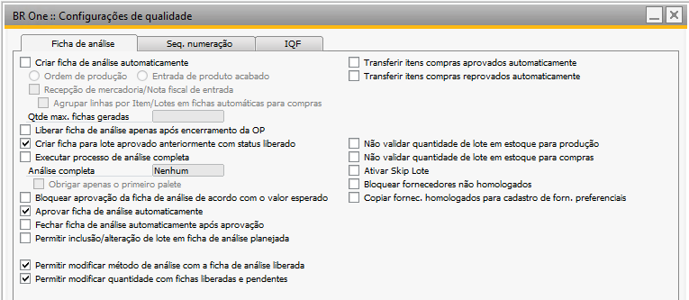
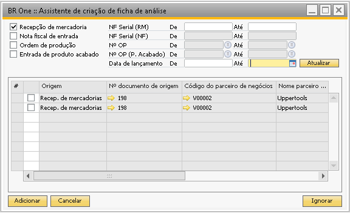
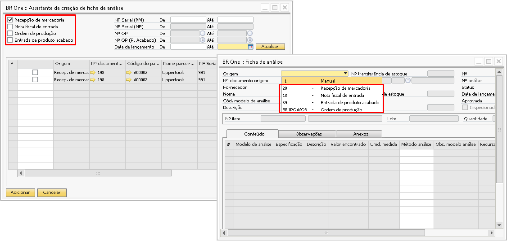
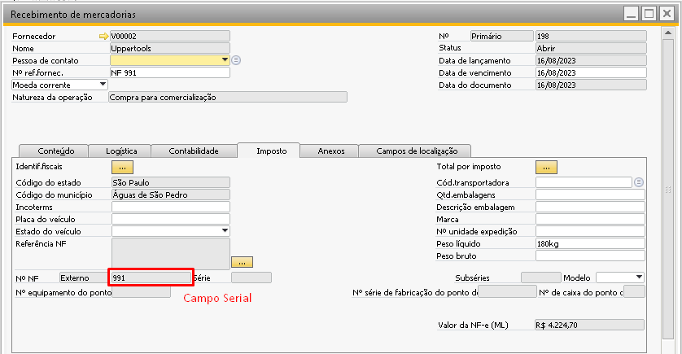
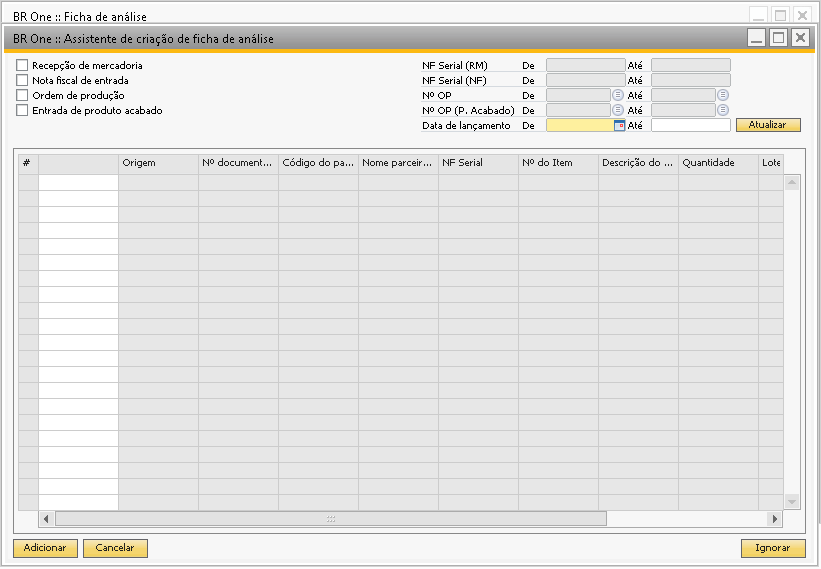
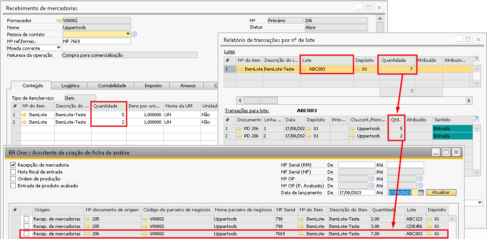
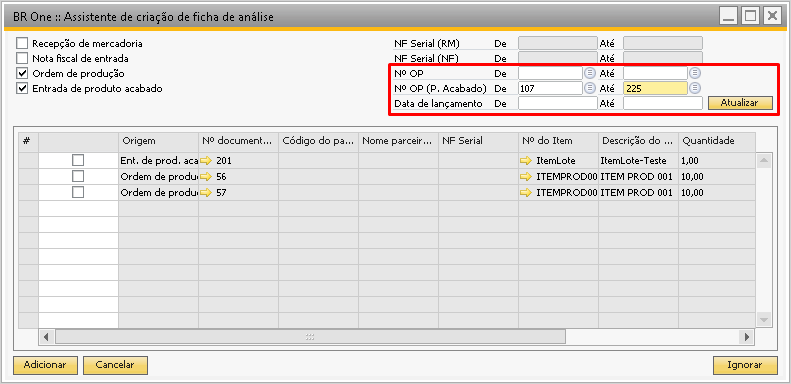
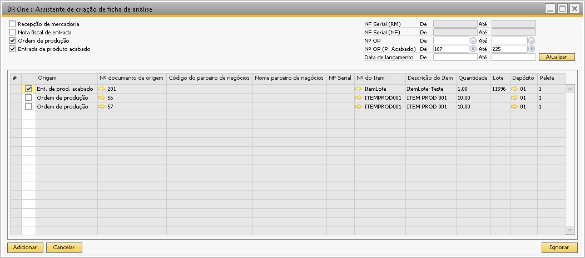
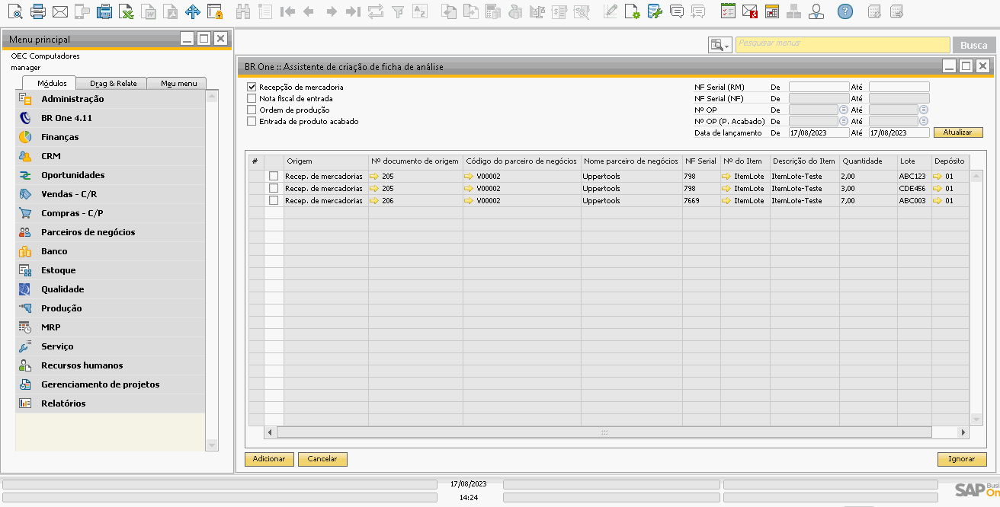

Assistente de criação de ficha de análise
Para realizar a criação de forma manual deve seguir o seguinte modelo:
O Campo “Criar ficha de análise automaticamente” deve estar desmarcada para que o documento seja levado para a assitente de criação de ficha de análise.
Para acessar a tela de Assistente de criação de ficha de análise, é necessatio ir ao menu:
Qualidade -> Assistente de criação de ficha de análise
Além de poder criar ficha de análise manualmente com base em documentos de origem por meio da tela de fichas de análise, também é possível utilizar o assistente de criação ficha de análise para essa criação. A principal função do assistente é auxiliar o usuário a criar fichas de análise para os documentos que não tiveram a ficha criada automaticamente. A sua utilização traz alguns benefícios como poder criar fichas de análise para vários itens do mesmo documento ou até mesmo criar fichas ao mesmo tempo para vários documentos.
No cabeçalho do assistente é apresentado os campos de filtro que são utilizados para a localização da informação necessária para a geração da ficha. Os documentos disponíveis para a seleção são os mesmos disponíveis da tela de ficha de análise.
Recebimento de mercadoria/Nota fiscal de entrada
Quando as fichas a serem criadas terão como base documentos de compra, apenas os filtros utilizados para localizar estes documentos estarão habilitados como busca por Serial do documento, data de lançamento ou ambos.
Quando já existir ficha criada para aquele documento e item ele não aparecerá no assistente, observe o exemplo abaixo onde do recebimento de mercadoria 198 o item ITEM0010 já possui ficha criada, sendo assim ele não aparece no assistente e ao cancelar a ficha criada e filtrar novamente ele ficará disponível também para a geração da ficha de análise.
Quando houver duas linhas com o mesmo item e lote no mesmo documento de compras, ele aparecerá em apenas uma linha e a quantidade total do lote no assistente para a geração da ficha de análise, mesmo que a configuração “Agrupar linhas por Item/Lotes em fichas automáticas para compras” estiver desmarcada conforme a imagem abaixo.
Ordem de Produção / Entrada de PA
Quando as fichas a serem criadas forem com base em uma ordem de produção ou entrada de PA, somente os filtros referentes a OP e data de lançamento estarão habilitadas.
Nas linhas do grid do assistente de criação de ficha de análise serão apresentadas informações referentes aos resultados encontrados dos filtros.
Após a validação das informações é necessário selecionar as linhas que terão as fichas criadas e clicar em Adicionar, para que essas fichas sejam geradas. Segue simulação abaixo:
Quando houver duas linhas com o mesmo item e lote no mesmo documento de compras, ele aparecerá em apenas uma linha e a quantidade total do lote no assistente para a geração da ficha de análise, mesmo que a configuração “Agrupar linhas por Item/Lotes em fichas automáticas para compras” estiver desmarcada conforme a imagem abaixo.
